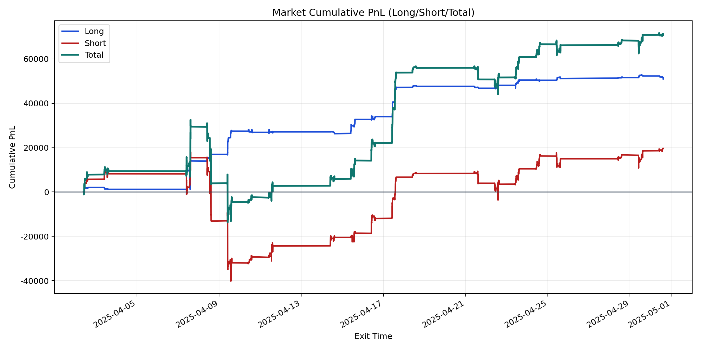
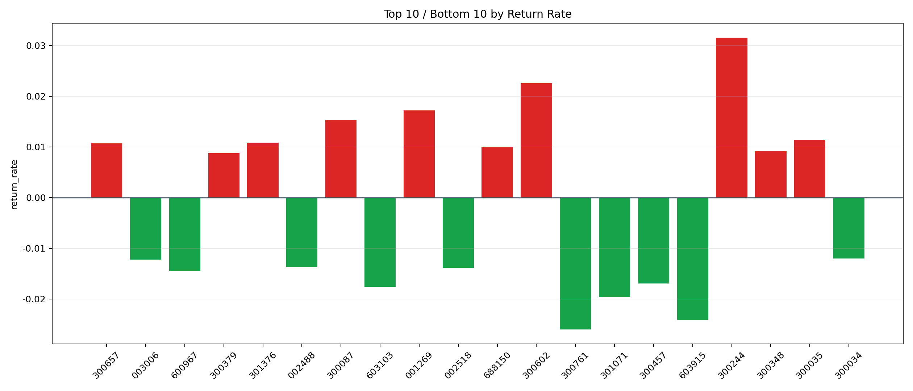

| repo_root | /home/haoranyou/data/output/alpha0.4_1w_5s_3ticks_index_filter/index_weights_1000 |
|---|---|
| period_months | 1 |
| period_label | 2025-04-02_to_2025-04-30 |
| start_time | 2025-04-02 09:51:27 |
| end_time | 2025-04-30 14:45:02 |
| n_trades | 11495 |
| n_symbols | 264 |
| total_pnl | 70598.44834999992 |
| long_total_pnl | 50938.41829999999 |
| short_total_pnl | 19660.03004999992 |
| total_entry_notional | 107466151.0 |
| long_entry_notional | 25521463.0 |
| short_entry_notional | 81944688.0 |
| total_return_rate | 0.0006569366046244638 |
| long_return_rate | 0.0019959051054400756 |
| short_return_rate | 0.00023991829769368236 |
| top_symbols_by_return | ["300244", "300602", "001269", "300087", "300035", "301376", "300657", "688150", "300348", "300379"] |
| bottom_symbols_by_return | ["300761", "603915", "301071", "603103", "300457", "600967", "002518", "002488", "003006", "300034"] |

